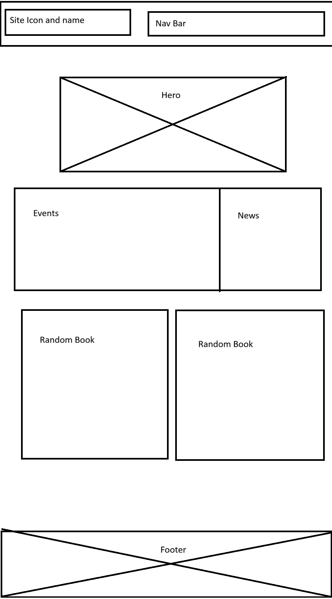
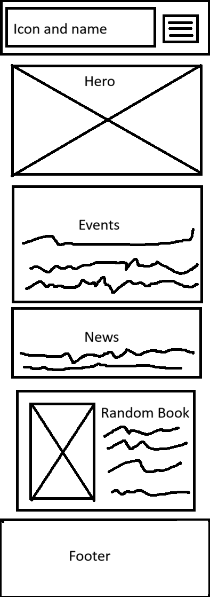

Final Project Site Plan
Name:
Bayer Library
Purpose
To provide info about the the library and allow users to see if a book is currently avalible or not. Also gives the user the ability to sign up for a library card.
Scenarios
-
What events are coming up at the library?
-
Is the book I want currently avalible?
Color Scheme
- Dark text color: Carbon Black: #1e2019;
- Accent color mainly used for marking books that are currently avalible: Baltic blue: #456990;
- Accent color mainly used to mark books that are currently checked out: Ruby red: #a6192e;
- Header and footer color: Light gold: #e0d68a;
- Accent color used mainly to mark books that are can be requested from other libraries: Tuscan Sun: #f9cb40;
- Light text color: Mint Cream: #f0f7f4;
Typography
Nunito(currently applied to the page)
Wireframes
Base:

Mobile:
